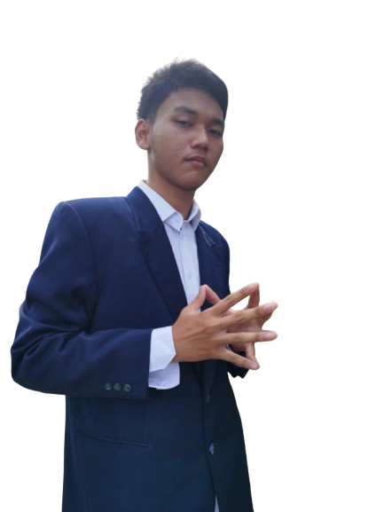

Ruslan Abdul Hadir, S.Pd, M.Mpd
Sambutan Kepala Sekolah
Kami sangat berbahagia menyambut Anda di website resmi sekolah kami. Sebagai kepala sekolah, izinkan saya memperkenalkan Nekoma High School sebagai lembaga pendidikan yang berkomitmen untuk menciptakan lingkungan belajar yang inovatif, inklusif, dan berkualitas. Di Nekoma High School, kami percaya bahwa setiap siswa memiliki potensi yang luar biasa. Kami berkomitmen untuk mendukung pengembangan akademis dan non-akademis siswa karena kami yakin bahwa kerjasama ini adalah kunci sukses.